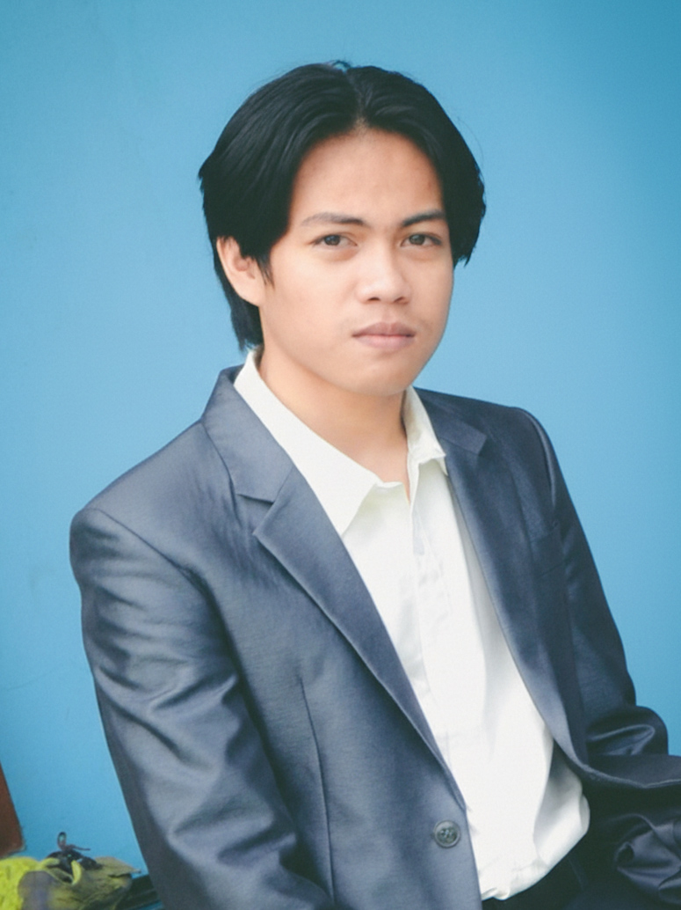

Pengalaman maksimal dengan performa mulus. Dirancang khusus untuk momen spontan bersama teman atau keluarga.
Selamat tinggal proses instalasi yang ribet! Tinggal buka link, berikan izin kamera pada browser, dan langsung jepret. Kompatibel di PC, Laptop, maupun Smartphone.
Bebaskan kreativitasmu. Pilih dari puluhan Google Fonts nyentrik, atur warna background sesukamu, dan terapkan filter visual seperti Vintage atau Black & White.
Hasil foto diraster dalam resolusi tinggi yang siap masuk ke feeds sosial mediamu atau dicetak ke kertas foto asli. Unduh dengan sekali klik tanpa watermark!
Dari eksperimen sederhana hingga menjadi platform lengkap. Pilih versi yang paling pas buat gaya tongkronganmu.
Versi fondasi pertama yang dibangun sebagai purwarupa. Fokus utamanya adalah membuktikan bahwa teknologi browser modern (WebRTC & HTML5 Canvas) mampu menangani proses penggabungan gambar layaknya mesin photobooth sungguhan tanpa memerlukan server backend yang rumit. Simpel, cepat, dan ringan.
Pembaruan masif pada User Interface dan fungsionalitas. Di versi ini, kami menyuntikkan kebebasan penuh kepada pengguna.
Membuktikan seberapa fleksibel kode dasar Snap Studio. Edisi pertama dirilis khusus untuk menyambut Idul Adha dengan kustomisasi bingkai framing khusus, elemen stiker yang meriah, dan palet warna tematik yang langsung bisa dipakai. Cocok untuk acara spesifik dan seasonal!

Creator & Developer
Halo! Gw adalah tangan di balik kode Snap Studio. Proyek ini awalnya cuma sekadar keisengan buat ngulik integrasi Camera API dan modifikasi Canvas di browser. Tapi karena responsnya positif, eh malah keterusan ngembangin sampai Versi 2 yang jauh lebih interaktif.
Gw percaya teknologi yang keren itu nggak harus ribet di-install. Snap Studio adalah bentuk dari kecintaan gw bikin interaksi web yang mulus, fungsional, dan pastinya gratis buat seru-seruan bareng temen tongkrongan.